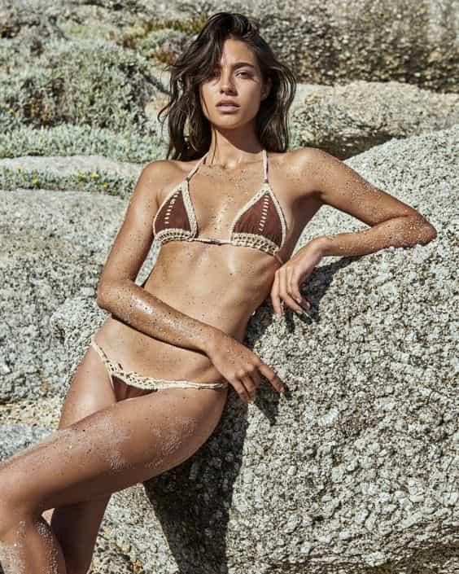

Troy is a game veteran of a decade's standing, and a lover of women, literature, travel and freedom. He is also the author of The Seven Laws of Seduction. Visit his website at Troy Francis.


The following is a sponsored article by Troy Francis.
Having been into pickup since around 2004, and having read a great deal of game material by many diverse authors, one things that fascinates me about today’s output is how little it is geared towards meeting women of high quality. By this I mean the very hottest girls: the singers, actresses and models; the 8s, 9s and 10s. Because surely this is the aim we all have, right? Isn’t this why we got into pickup in the first place—to meet the sexist girls possible?
Remember the book The Game? In that, Neil Strauss talked about hitting on the likes of Paris Hilton and Britney Spears. There was a real sense, when it came out, that here was a volume that would teach us how to meet these upper-echelon girls.
Today most pickup advice is a lot more measured. These days—thankfully—it’s not about canned lines and routines. These days it’s about self-improvement and maximizing the number of approaches you can do. Which is great—I strongly advocate these practices myself. But where is the aspiration? Who is teaching us the mindsets and strategies necessary to have a chance of meeting the most beautiful women on the planet?
It struck me that there must be something, some special sauce, that can be identified that sets apart the world’s greatest players from those who do well but don’t often pick up the cream of the crop.
How often do we hear that ‘nice guys finish last’? How often do we read that it’s the assholes, the jerks who get all the hot girls? All the time. And there’s this sense, isn’t there, that you are either a ‘nice guy’ or an ‘asshole’. And if you weren’t born with the ‘asshole gene’ then sorry, you’re just going to have to make do with the scraps along with all the other beta, nice guy losers.
I refuse to accept that is the case. I believe 100% in human beings’ ability to transform themselves into whatever they want to be. That being so, I wondered if there are specific characteristics of ‘assholeness’ that can be learned, so that the guy to whom they don’t come naturally is able to take advantage of their obvious benefits.
And by the way, this goes far beyond just picking up girls. I have recently been locked in (yet another) battle with an unscrupulous corporate employer. I’ve had a couple of these situations in recent years—where a company has tried to harm me and I’ve fought back. What they’ve taught me is that in an arena where your opponents will fight dirty to destroy you, you have to be prepared to do the same. And I’ve risen to the challenge. So while if you met me you might think me to be a ‘nice guy’—and indeed I am—I haven’t been afraid to use the tactics of the asshole when it’s been in my best interests to do so.
The political shenanigans I’ve been through at work renewed my interest in texts such as Oliver James’ excellent Office Politics: How To Thrive In A World Of Backstabbing, Lying And Dirty Tricks , as well as Robert Greene’s The 48 Laws of Power and Niccolo Machiavelli’s The Prince, all of which are invaluable for negotiating such situations.

Oliver James’s Office Politics focuses heavily on the so-called ‘dark triad’ characteristics of Machiavellianism, narcissism and psychopathy. James’ central thesis is that people who have all three are those most likely to thrive in a corporate environment, since they have no compunction in doing whatever it takes to get to the top.
Fascinatingly, there had also been a lot of coverage both on men’s sites and in the mainstream media about the fact that women are most attracted to ‘dark triad’ men. The ‘bad boys’ who were getting access to quick and easy sex with hotties, as opposed to the ‘good guys’ who were made to wait seven dates and were expected to marry and take on responsibilities in return, were dark triad.
If anyone was looking for the DNA of the asshole then here it was.
But as I researched the dark triad further I became aware that there was a fourth element that researchers had identified to make up a ‘dark tetrad’—sadism. And it seems pretty obvious in a post-50 Shades of Grey world that women are hot for a bit of (consensual) sadism.

It was clear, though, that there was something else, some special sauce that was required to make even the dark tetrad man irresistible to the hottest women. After all there are plenty of guys with warped personalities out there and they’re not all banging Taylor Swift.
It was at this point that I became really interested in the idea of radical differentiation (a term first coined by Ross Jeffries) and how it had helped me in my own development as a player. ‘Radical differentiation’ is the act of differentiating yourself as sharply as possible from your competition—other men. The more that you can do to stand out and be different, the more attractive you will be to women.
And then it hit me: if you are able to harness dark tetrad characteristics to radical differentiation perfectly then you would be irresistible to the hottest women:
DARK TETRAD CHARACTERISTICS + RADICAL DIFFERENTIATION = IRRESISTIBLE TO THE HOTTEST WOMEN
Now for the disclaimer: of course, it is impossible for a regular guy to perfectly take on all of the dark tetrad characteristics fully, and nor should you want to. However, I realised that I had hit on something new. If you could get anywhere close to the formula above then your success with women would go through the roof. If guys took and applied this idea then it would be like nothing else since Mystery Method.
Of course, there is an ethical dimension to this. You probably don’t want to become a complete asshole and nor should you, since doing so won’t make you happy. But if you can take on little elements of each of the four dark tetrad characteristics and radically differentiate yourself from your peers then not only will your success with girls go up exponentially, but you’ll also find that you have stronger boundaries and you are less likely to get pushed around in work and social situations
In the end, when you bring it down to a more ‘normal’ level, the dark tetrad characteristics are about taking less shit from other people, while radical differentiation is about being yourself unapologetically. The great news is that if you can do both of these things then you will be truer to yourself as well as more attractive to beautiful women.

These are the ideas I explore in my latest book of brand new material, HOW TO BE AN ASSH*LE (THAT BEAUTIFUL WOMEN LOVE) which was released as an Amazon Kindle ebook on Monday 10th July. This book presents a brand new formula for attracting beautiful girls which has the potential to revolutionise the game more radically than anything since The Mystery Method.
The book will also be released in paperback format soon.
Yes, it’s hot on the heels of my last release HOW TO GET HOT GIRLS INTO BED , but I’ve had a lot more time to devote to writing recently, plus the idea for this book came to me almost in a flash and demanded to be written.
HOW TO BE AN ASSH*LE does what it says on the tin. It explores each element of the dark tetrad in turn, and considers how the regular guy might benefit from taking on elements of it in his own personality. It then goes on to examine radical differentiation, and how you can benefit by being more yourself and caring less what others think.
Then you will learn how you can put all of the pieces together to become a stronger, more dominant, alpha man who women are drawn to and men respect.
To get your copy of HOW TO BE AN ASSH*LE (THAT BEAUTIFUL WOMEN LOVE) as soon as it’s released, visit this link. If you want to sleep with hotter girls and you want to stay up to date with the most cutting-edge thinking on how to do so then you need a copy of this book. I’m getting feedback from the first readers already and to say they’re loving it is an understatement.
To order your copy of Troy’s brand new game book HOW TO BE AN ASSH*LE (THAT BEAUTIFUL WOMEN LOVE) click here. (UK readers should click here.)